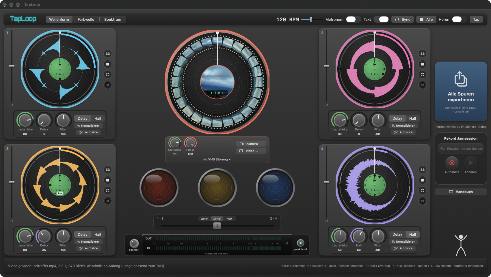

macOS-App · Looper mit Plattentellern
TapLoop
Was du ins Mikrofon spielst, wird sofort zu einer Schallplatte, die du scratchen kannst – auf vier Tellern, alles im selben Takt. Neu ist der Video-Teller: aussen ein Filmstreifen, innen der Ton, beides getrennt scratchbar.

Was die App macht
Klick = Aufnahme
Jeder Teller ist ein Looper wie ein Fusspedal: Klick nimmt auf, nächster Klick spielt die Schleife endlos, im Takt mit den anderen.
Scratchen wie auf Vinyl
Die Schleife liegt als Wellenform auf der Platte. Ziehen scratcht, dazu Bremsen, Backspin, 33/45, Filter und Crossfader.
Tempo per Schnalzen
Ins Mikrofon schnalzen oder klatschen setzt das Tempo; die erste Schleife wird auf ganze Schläge geschnitten, Tempowechsel ohne Tonhöhenänderung.
Video-Teller neu
Aussen der Filmstreifen, innen der Titel, im Etikett das Bild. Aussen ziehen scratcht nur das Bild, innen nur den Ton, in der Mitte beides.
Kamera oder Video neu
Kamera einschalten und Klick: Bild und Ton werden eine Schleife. Oder eine Videodatei laden – TapLoop nimmt einen Abschnitt, der zum Takt passt.
97 Bildeffekte neu
VHS, Comic, Pop-Art, Ölgemälde, Kaleidoskop und viele mehr, mit Drehknopf eingemischt; manche reagieren auf Bässe und Höhen.
Plattenkiste
Acht Fächer je Teller mit eigenen und mitgelieferten Schleifen; der Wechsel kommt nahtlos am Schleifenende.
Jamsession mitschneiden
Die ganze Session mit Scratches und Effekten als eine Datei aufnehmen und als WAV oder M4A sichern.
Download
| Version | 1.0 (Build 44), von Apple notarisiert, mit automatischen Updates |
|---|---|
| System | macOS 14 (Sonoma) oder neuer, Apple Silicon und Intel |
| Preis | Während der Testphase kostenlos, ohne Einschränkung |
| Datei | TapLoop.dmg (25 MB) · SHA-256 2ad15d21597314eeaf73e1a5b875acd016734bb00e4b5ed42cd5dd3074754a2b |
Häufige Fragen
Wie installiere ich TapLoop?
DMG öffnen, „TapLoop“ auf „Programme“ ziehen und starten. Die App ist von Apple geprüft (notarisiert); beim ersten Start fragt macOS einmal nach, beim ersten Aufnehmen nach dem Mikrofon.
Brauche ich Zusatzgeräte?
Nein. Das eingebaute Mikrofon genügt; mit Kopfhörern nimmt die neue Schleife die laufenden nicht mit auf. Audio-Interfaces mit mehreren Eingängen gehen auch.
Was macht TapLoop mit Kamera und Mikrofon?
Die Kamera läuft nur, wenn du am Video-Teller „Kamera“ einschaltest. Bild und Ton bleiben auf deinem Mac; gespeichert wird nur, was du selbst sicherst. TapLoop sendet nichts und hat kein Konto. Details: Datenschutz.
Welche Videos kann ich laden?
Alles, was macOS abspielt (MP4, MOV …). TapLoop liest einen Abschnitt ab Anfang, der zum Takt passt: Bild auf den Filmstreifen, Ton auf den Innenring. Nimm Videos, an denen du die Rechte hast.
Hilfe und Fehler melden
Im Programm: Menü Hilfe und das Handbuch (PDF). Sonst: Support oder metacube@gmail.com.